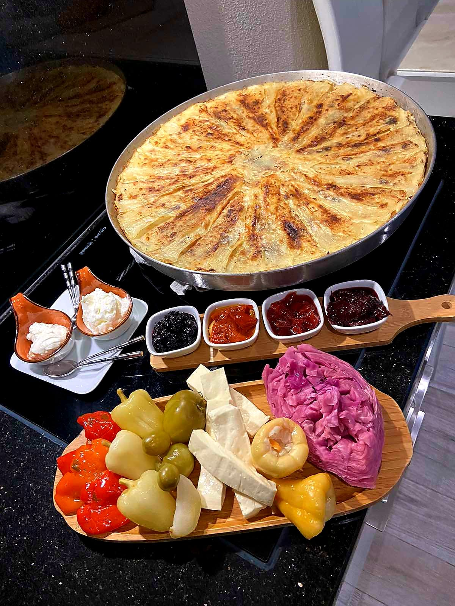
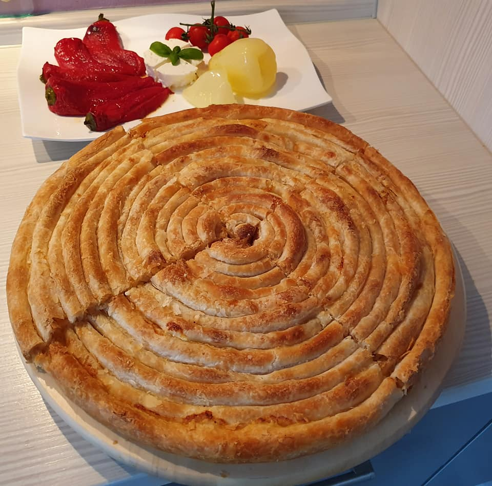
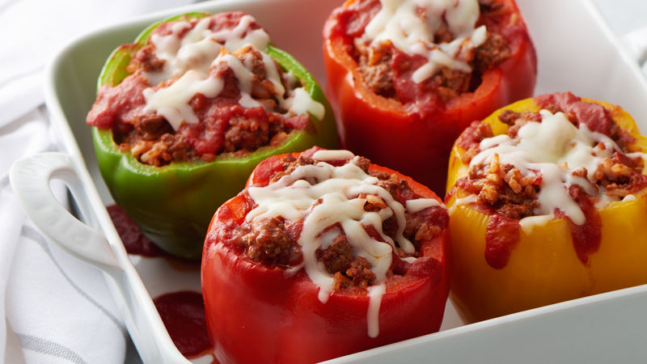
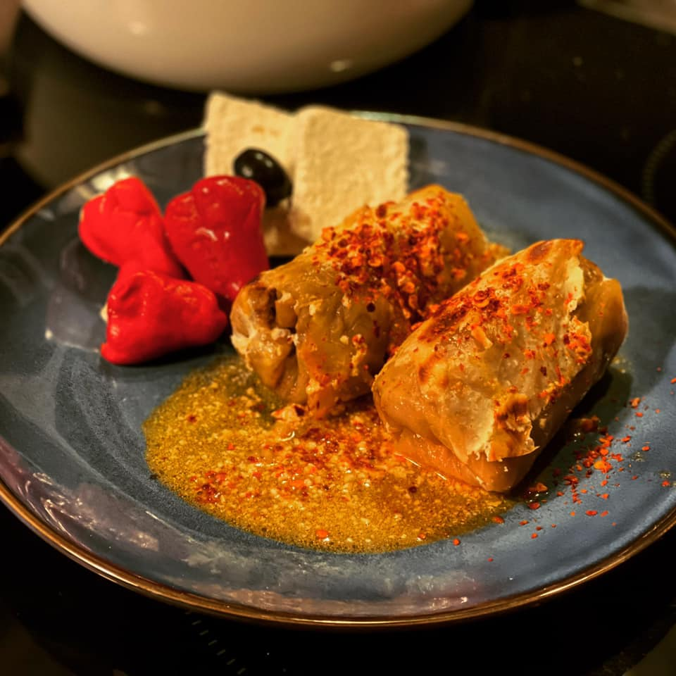
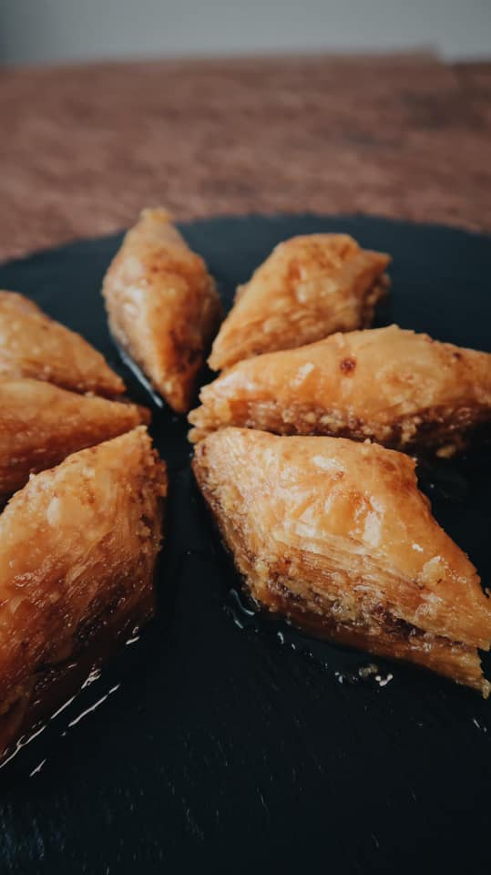

{kind=link}
{kind=link}
The cuisine of Kosovo compatibly matches with the area’s continental climate. The Kosovar daily cuisine consisting of various pies and an assortment of meat, coordinates well with the hot summers and cold winters it possesses. As a result of its continuous history involved with conflict and invasion, the cuisine of Kosovo has been developed consisting of dishes from various nationalities
| Traditional foods |
|||
|---|---|---|---|
|  |
FliaFlia, also known as fli or flija, is a dish in Kosovan cuisine and Albanian cuisine. It consists of multiple crêpe-like layers brushed with cream and served with sour cream and butter. It’s not a particularly sweet dish, I guess it’s more on the savory side. It’s made from a thinnish batter, and a creamy mixture Read more |
 |
PiesA variety of pies are common in Kosovo.Kullpite- Pie with nothing inside and is covered with yogurt. Burek- Also known as pie in Albania. Bakllasarm- A salty pie with yoghurt and garlic covering. Pumpkin pie. Spinach pie. Read more |
|  |
Stuffed peppersStuffed peppers is a dish common in many cuisines. It consists of hollowed or halved peppers filled with any of a variety of fillings, often including meat, vegetables, cheese, rice, or sauce. The dish is usually assembled by filling the cavities of the peppers and then cooking. Read more |
 |
SarmaYou cant leave Pristina without trying the sarma. They look like adorable cocoons but are really a mixture of minced meat, veggies, and rice rolled in cabbage leaves or vine leaves. Sarma, commonly marketed as stuffed grape leaves, is a type of dolma—a stuffed dish Read more |
|  |
BaklavaA decadent Balkan dessert made with layers of filo pastry and nuts and drenched with syrup or honey Rich in flavor, juicy and sweet, a real calorie bomb that is hard to resist – baklava. Found all over the Balkans, baklava is one of the most popular desserts found in party shops and kitchen tables. The history of baklava is somehow complicated as there is no specific written evidence of its origins. Read more |
 |
KebabKebab is a cooked meat dish, with its origins in Middle Eastern cuisines. Many variants are popular around the world. Kebabs consist of cut up or ground meat, sometimes with vegetables, and various other accompaniments according to the specific recipe. Although kebabs are typically cooked on a skewer over a fire, some kebab dishes are baked in a pan in an oven or prepared as a stew such as tas kebab Read more |
{kind=link}
{kind=link}
{kind=link}
{kind=link}
{kind=link}
| Lorem, ipsum. | Categories |
|---|---|
 |
Kategoria1 Kategoria1 Kategoria1 Kategoria1 Kategoria1 Kategoria1 Kategoria1 Kategoria1 Kategoria1 |
Link headerKategoria1Kategoria1 Kategoria1 Kategoria1 Kategoria1 Kategoria1 Kategoria1 Kategoria1 Kategoria1 |
|
Link headerKategoria1Kategoria1 Kategoria1 Kategoria1 Kategoria1 Kategoria1 |